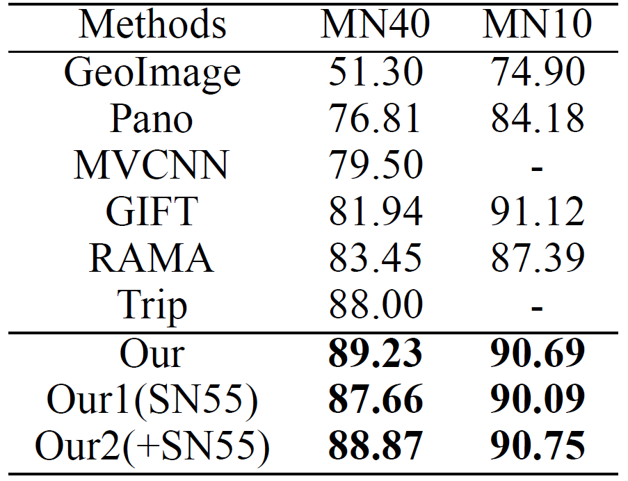
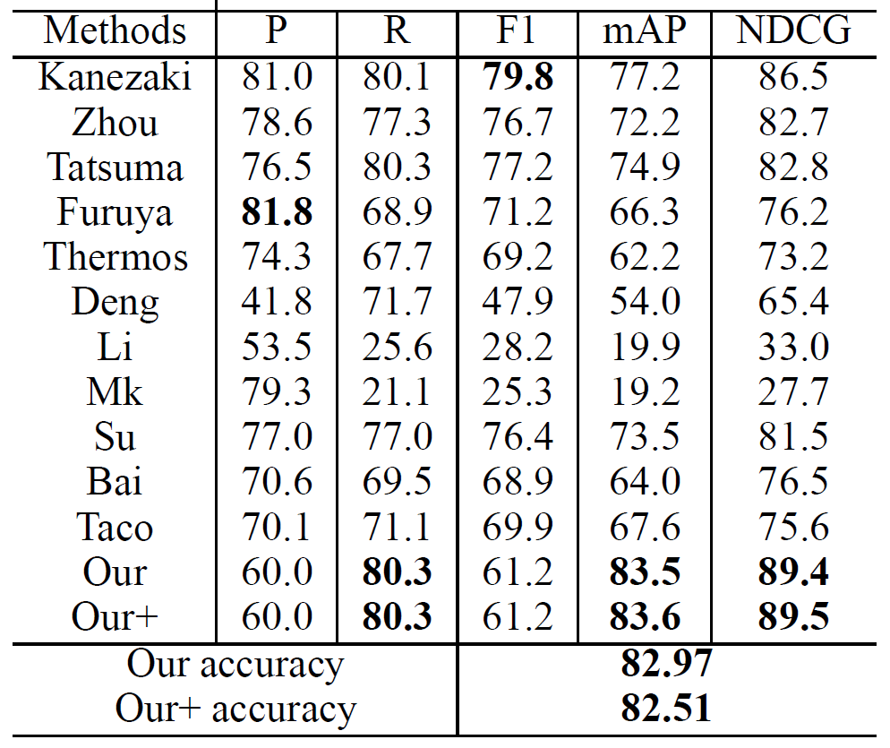

View Inter-Prediction GAN: Unsupervised Representation Learning for 3D Shapes by Learning Global Shape Memories to Support Local View Predictions
School of Software, Tsinghua University, Beijing, China

Figure 1: The framework of VIP-GAN.
In this paper, we present a novel unsupervised representation learning approach for 3D shapes, which is an important research challenge as it avoids the manual effort required for collecting supervised data. Our method trains an RNN-based neural network architecture to solve multiple view inter-prediction tasks for each shape. Given several nearby views of a shape, we define view inter-prediction as the task of predicting the center view between the input views, and reconstructing the input views in a low-level feature space. The key idea of our approach is to implement the shape representation as a shape-specific global memory that is shared between all local view inter-predictions for each shape. Intuitively, this memory enables the system to aggregate information that is useful to better solve the view inter-prediction tasks for each shape, and to leverage the memory as a view-independent shape representation. Our approach obtains the best results using a combination of L2 and adversarial losses for the view inter-prediction task. We show that VIP-GAN outperforms state-of-the-art methods in unsupervised 3D feature learning on three large-scale 3D shape benchmarks.
{kind=link}
Figure 2: Modelnet Classification result.
{kind=link}
Figure 3: Modelnet Retrieval result.
{kind=link}
Figure 4: Shapenet Retrieval result.
Zhizhong Han, Mingyang Shang, Yu-Shen Liu, Matthias Zwicker. View Inter-Prediction GAN: Unsupervised Representation Learning for 3D Shapes by Learning Global Shape Memories to Support Local View Predictions. AAAI, 2019.
Zhizhong Han, Email address: h312h@mail.nwpu.edu.cn.
Mingyang Shang, Email address: smy16@mails.tsinghua.edu.cn.